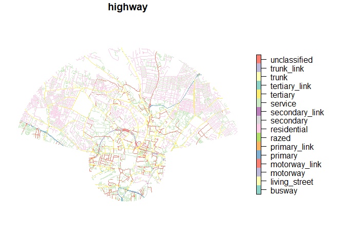
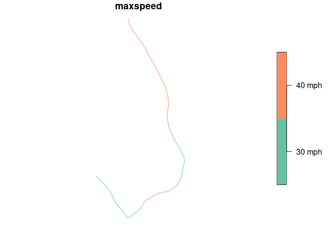

usethis::use_readme_rmd()
usethis::use_description()
usethis::use_package("sf")
usethis::use_package("osmextract", type = "Suggests")
usethis::use_package("zonebuilder", type = "Suggests")
devtools::build_readme()
usethis::use_data_raw("sr_data_osm")The goal of sfrouting is to enable people to generate routes for reproducible research. The package provides an interface between {sfnetworks} and {cppRouting} R packages, taking part of its name from each package: the package takes sf and sfnetworks objects as inputs, uses routing packages (and functions in this package TBC), and outputs sf objects.
A design principle is for sf to be the only import (package installed by default when you install this package). You will be asked to install additional packages when needed.
Installation
You can install the development version of sfrouting from GitHub with:
# install.packages("pak")
pak::pak("Robinlovelace/sfrouting")Example
Let’s do some routing within a city of your choice. Change the name of the city and max_circle_id and segment_ids objects in the code chunk below to test the package for yourself elsewhere.
# library(sfrouting)
devtools::load_all()
#> ℹ Loading sfrouting
library(sf)
#> Linking to GEOS 3.12.1, GDAL 3.8.4, PROJ 9.3.1; sf_use_s2() is TRUE
library(tidyverse)
#> ── Attaching core tidyverse packages ──────────────────────── tidyverse 2.0.0 ──
#> ✔ dplyr 1.1.4 ✔ readr 2.1.5
#> ✔ forcats 1.0.0 ✔ stringr 1.5.1
#> ✔ ggplot2 3.5.2 ✔ tibble 3.3.0
#> ✔ lubridate 1.9.4 ✔ tidyr 1.3.1
#> ✔ purrr 1.1.0
#> ── Conflicts ────────────────────────────────────────── tidyverse_conflicts() ──
#> ✖ dplyr::filter() masks stats::filter()
#> ✖ dplyr::lag() masks stats::lag()
#> ℹ Use the conflicted package (<http://conflicted.r-lib.org/>) to force all conflicts to become errors
library(sfnetworks)
# Get study area boundar
zones_area = zonebuilder::zb_zone("Leeds", n_circles = 7)
#> Loading required namespace: tmaptools
# mapview::mapview(zones_area, zcol = "circle_id")
# zonebuilder::zb_plot(zones_area)
max_circle_id = 2 # max diameter of study area
segment_ids = c(0:2, 10:12) # 0:12 for all segments
zones = zones_area |>
dplyr::select(-centroid) |>
dplyr::filter(circle_id <= max_circle_id & segment_id %in% segment_ids)
# plot(zones)
# mapview::mapview(zones)
area = sf::st_union(zones)
# plot(area)
osm_data = osmactive::get_travel_network(
# place = "west yorkshire", # For specific download
place = area,
boundary = area,
boundary_type = "clipsrc"
)
#> The input place was matched with West Yorkshire.
#> The chosen file was already detected in the download directory. Skip downloading.
#> Starting with the vectortranslate operations on the input file!
#> 0...10...20...30...40...50...60...70...80...90...100 - done.
#> Warning in CPL_gdalvectortranslate(source, destination, options, oo, doo, :
#> GDAL Message 1: A geometry of type MULTILINESTRING is inserted into layer lines
#> of geometry type LINESTRING, which is not normally allowed by the GeoPackage
#> specification, but the driver will however do it. To create a conformant
#> GeoPackage, if using ogr2ogr, the -nlt option can be used to override the layer
#> geometry type. This warning will no longer be emitted for this combination of
#> layer and feature geometry type.
#> Finished the vectortranslate operations on the input file!
#> Reading layer `lines' from data source
#> `/data/bronze/osm/geofabrik_west-yorkshire-latest.gpkg' using driver `GPKG'
#> Simple feature collection with 10059 features and 67 fields
#> Geometry type: MULTILINESTRING
#> Dimension: XY
#> Bounding box: xmin: -1.587293 ymin: 53.78843 xmax: -1.500002 ymax: 53.82436
#> Geodetic CRS: WGS 84
#> Matched these columns: lanes_psvlanes_buslanes_bus_conditionallanes_bus_backwardlanes_bus_forwardlanes_psv_backwardlanes_psv_forwardlanes_psv_conditionallanes_psv_conditional_backwardlanes_psv_conditional_forwardlanes_psv_conditional_both_wayslanes_psv_both_ways
osm_drive = osmactive::get_driving_network(osm_data)
osm_drive = sf::st_cast(osm_drive, "LINESTRING")
#> Warning in st_cast.sf(osm_drive, "LINESTRING"): repeating attributes for all
#> sub-geometries for which they may not be constant
plot(osm_drive["highway"])
nrow(osm_drive)
#> [1] 4975
# mapview::mapview(osm_drive, zcol = "highway", lwd = 1)
sfn = as_sfnetwork(osm_drive, directed = FALSE)
# Add node IDs to sfn for routing, needed for filter() below
sfn = sfn |>
activate("nodes") |>
mutate(ID = row_number())
nodes = sfn |>
st_as_sf()
graph = sfn_to_cpprouting(sfn)
nrow(graph$coords)
#> [1] 7055Let’s calculate a route from Scott Hall Road to University Road:
origin_road = sfn |>
activate("edges") |>
filter(name == "Scott Hall Road") |>
activate("nodes") |>
filter(!tidygraph::node_is_isolated()) |>
st_as_sf()
# plot(origin_road)
node_id = origin_road$ID[1]
destination_road = sfn |>
activate("edges") |>
filter(name == "University Road") |>
activate("nodes") |>
filter(!tidygraph::node_is_isolated()) |>
st_as_sf()
# plot(destination_road)
destination_node_id = destination_road$ID[1]
route_sf = sr_route(sfn, from = node_id, to = destination_node_id)
plot(route_sf["maxspeed"])
# mapview::mapview(route_sf, zcol = "maxspeed", lwd = 1)
# Let's calculate for 100 random routes
set.seed(123)
n_routes = 10000
random_routes = tibble(
from = sample(nodes$ID, n_routes, replace = TRUE),
to = sample(nodes$ID, n_routes, replace = TRUE)
) |>
filter(from != to)
nrow(random_routes)
#> [1] 10000
routes = cppRouting::get_path_pair(
Graph = graph,
from = random_routes$from,
to = random_routes$to
)
# Convert to sfnetwork
routes_sfn = sfn |>
activate("nodes") |>
filter(ID %in% unlist(routes)) |>
activate("edges") |>
st_as_sf()
nrow(routes_sfn)
#> [1] 1457
nrow(osm_data)
#> [1] 10059
# mapview::mapview(routes_sfn, zcol = "maxspeed", lwd = 1)